10. Travels through the province of Toledo
10. Travels through the province of Toledo
May 5 to September 9, 2022


207. Toledo
207. Toledo
To enter Toledo, we'll have to cross one of its magnificent bridges or pass through one of its gates. The Tagus River flows around much of the city, and a long wall with beautiful gates protects it. Muslim and Christian heroes passed through these gates, as did monarchs such as Alfonso VI and Charles V, who helped shape what is now Spain. The image on the right shows several gates, including the Bisagra, Sol, Valmardón and Cambrón gates.
That is why most of the gates are built in the Mudéjar style, which combines Christian and Islamic influences. At some gates, such as the Bisagra Gate, Greco-Roman architecture replaced the old Islamic structure after it was demolished. Another example of a landmark that changed over time is the Alcántara Bridge which was quickly rebuilt after a flood destroyed it more than 500 years ago, this time in a style more typical of the 15th century. The bridge itself dates back to Roman times. An inscription on one of its arches mentions Emperor Trajan, who ruled Rome when its empire was at its greatest extent and was himself born in Hispania. The Roman Temple of Alcántara stands beside the bridge.
Just beyond the bridge stands the Castle of San Servando, which faces the Alcázar, formerly an Islamic citadel. The castle served as a stronghold for Christians before the conquest of Toledo in 1085 and later played a defensive role.
Across the river stands the San Martín Bridge which appears in the photo carousel after the Alcántara Bridge.
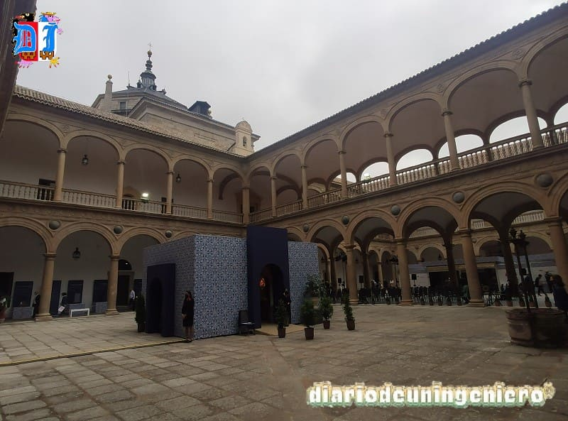
Another notable landmark outside the old town is Tavera Hospital, which is dedicated to Saint John the Baptist and served as a burial place for Cardinal Tavera and his companions.
Because it stood outside the old town, it was known as "the hospital outside the walls". The Historical Archive of the Nobility is now housed here and occasionally holds temporary exhibitions in some of its rooms. The most striking feature is the double courtyard in the Plateresque style. Its construction was overseen by Alonso Covarrubias, architect to Charles V. Covarrubias had a major influence on Toledo's architecture at the height of the city's splendour, when Charles V made Toledo the capital of his kingdom and empire and brought leading painters and artists to work here.
The Alcázar and the Alcántara Bridge are among the oldest structures in Toledo. The Alcázar was built as a Roman palace in the 3rd century and later served as a royal residence under the Visigoths. After the arrival of the Arabs, the interior and exterior were remodelled to turn it into a fortified residence.
After Alfonso VI took Toledo in 1085, the Alcázar was restored and enlarged. Later kings made further alterations, and the corner towers were added later. During the Islamic period, the outer walls had been more heavily fortified.
The Alcázar began to take on its present appearance under Charles V. The architects Alonso Covarrubias and Juan de Herrera redesigned the front and rear façades, and the imperial coat of arms of Charles V was set into the front. The interior courtyard was also remodelled, and the staircase was added. Both became distinctive features of the palace.
The first fire broke out during the War of Succession. A second fire during the French occupation destroyed the palace interior.
After the Alcázar was restored in the 19th century, Isabella II handed it over to the Infantry Academy. It retained its military role for most of the 20th century.
Notable rooms include the Royal Chamber, shown in one of the photographs, the Hall of Honour and the Mudéjar Hall.
During the Spanish Civil War, Republican troops destroyed the building after an unsuccessful siege. The siege became a symbol of victory for the Nationalist side and marked a turning point in the campaign to take Madrid.
After the war, the Alcázar was restored and became a museum in Toledo, focused primarily on the building and the Infantry Academy. That changed following the 2009 restoration, when the collection of Madrid's military museum was moved here. It became a military museum with exhibits on the history of the Spanish state. Most displays cover the years up to the Spanish Civil War. Just a couple of rooms cover the war, Franco's dictatorship and the reign of Juan Carlos.
One important result of the restoration was the discovery of the foundations of the old Islamic fortress and the palace walls. One of the original entrance gates from that period was also found intact.
The Alcázar also has a clear view of the military academy, which is shown in the photograph below.
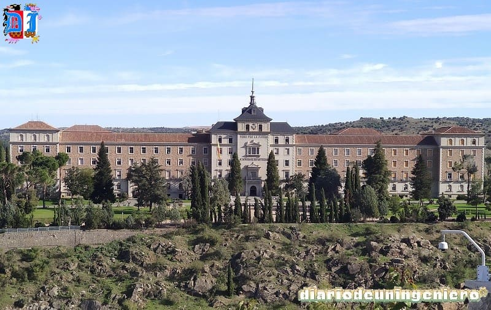
The museum is housed in
Its four courtyards and staircases recall other buildings in the same style, such as the Mendoza Palace in Guadalajara. The hospital was founded by Cardinal Mendoza, and it bears his coat of arms. The Mendozas, who held the title of Dukes of the Infantado, were among the wealthiest noble families in 16th-century Spain. Their wealth came from services they rendered to the monarchs during the Reconquista and by supporting the Crown in the Revolt of the Comuneros.
The museum traces history from the 16th century, when the building was constructed, with a focus on the Habsburgs and works from their era. Highlights include paintings by El Greco, above all his Immaculate Conception, which is displayed in a dedicated chapel.
The collection also includes objects found in Toledo from many different periods and items from the city's churches and cathedral.
Toledo is full of houses that once belonged to prominent people. The most striking and most visited of these palaces is the Royal College of Noble Maidens. The building dates to the reign of Philip II. It was originally the home of Diego Hurtado de Mendoza, the son of Cardinal Mendoza and brother of the Duke of the Infantado. Both came from Guadalajara. The cardinal was one of the most influential figures in 16th-century Spain, and his remains lie in the main chapel of Toledo Cathedral. The palace has a large chapel and church, and the rector's room has a beautiful coffered wooden ceiling and Flemish tapestries of the period. It also houses important paintings of that era. In addition to the church, the complex has a large courtyard and two towers with unusually close views of the cathedral. It is the highest point so close to the cathedral's main tower.
Another notable building is El Greco's House which houses several of his works. It is a recreation of a house from El Greco's time and of the sort he might have lived in. It has a traditional Toledo courtyard with plenty of character, a period kitchen and a bedroom. His actual home stood just 100 metres away, where there is now a statue in his honour. Among the house's notable rooms is a chapter house, since the building belonged to a nobleman close to El Greco. Two of the painter's most important works are also on display.
Other houses associated with prominent people have disappeared altogether. Some changed hands between families and others were destroyed. One example is the house of Garcilaso de la Vega, which was identified 15 years ago using details from documents of the time and its proximity to the Church of San Román.
Among the most important civic buildings are the Town Hall, shown below, the Archbishop's Palace beside the Town Hall and cathedral, the palace that houses the Toledo Provincial Council, Fuensalida Palace, seat of the regional government of Castilla-La Mancha, and San Gil Convent which now houses the regional parliament of Castilla-La Mancha, although it was built for a religious community. The photograph below shows the present-day Town Hall.
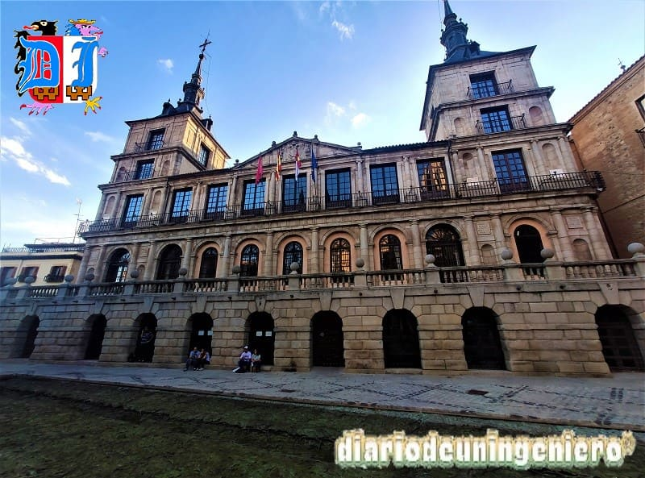
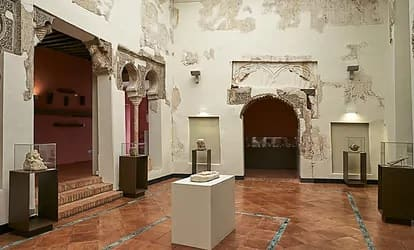
Another unusual building is the Casa del Temple, which dates back to the 11th and 12th centuries and features Islamic-style architecture. It takes its name from the Knights Templar, who once owned it, and it served as an inn in the 14th century. Its main feature is the hall, which dates to the 10th century. In the next blog post I'll describe Toledo's religious and secular architecture associated with the Christian, Muslim and Jewish communities that lived here together.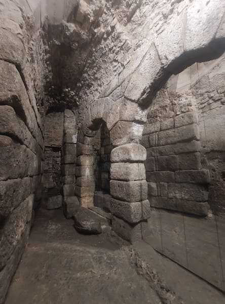
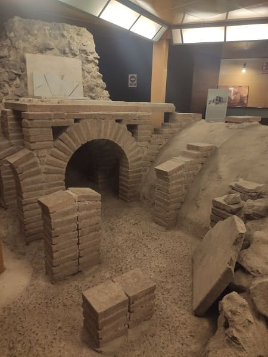
Roman ruins have also been discovered and catalogued in recent years. One example is the Cave of Hercules, where excavations have uncovered foundations from the Islamic and Roman periods. The building may have served as a refuge for different communities following the Islamic occupation and later the Christian reconquest.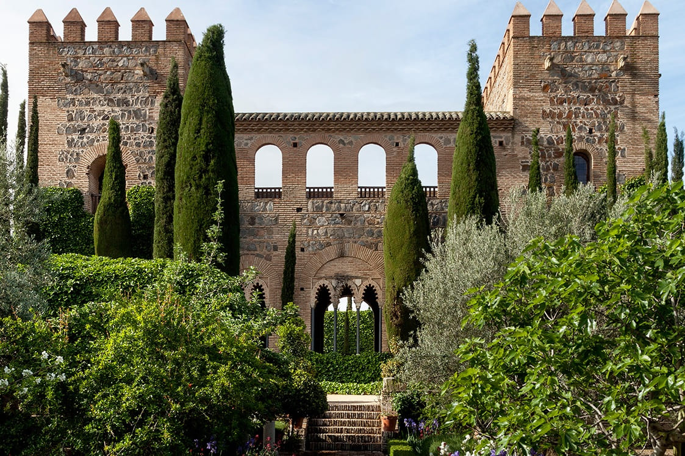
To round off this tour of Toledo's lesser-known buildings, there is the Palace of Galiana, which has also been restored in recent years. The restored building is what remains of an almunia, or country retreat, built in the 11th century by Al-Mamun, king of the Taifa of Toledo.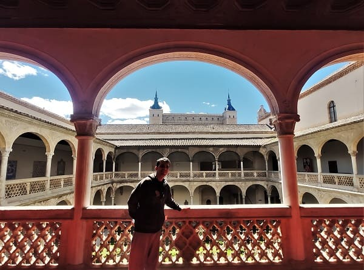
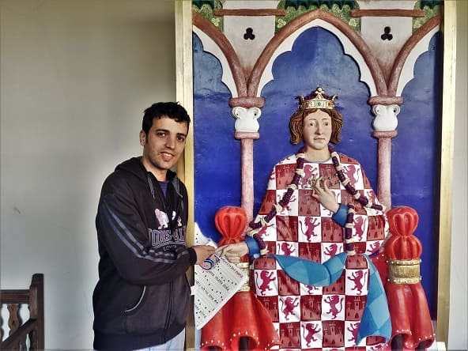
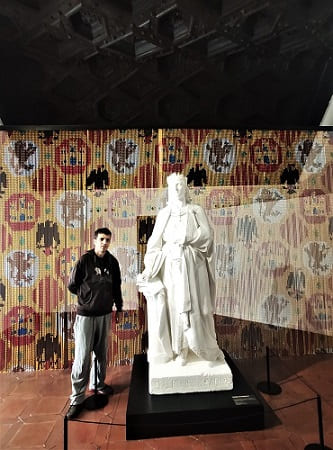
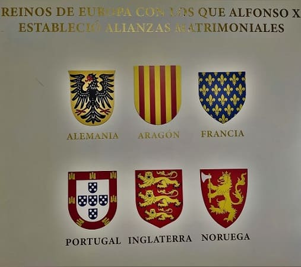
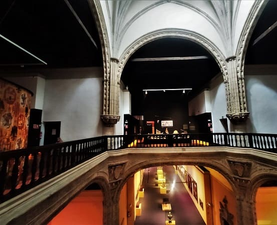
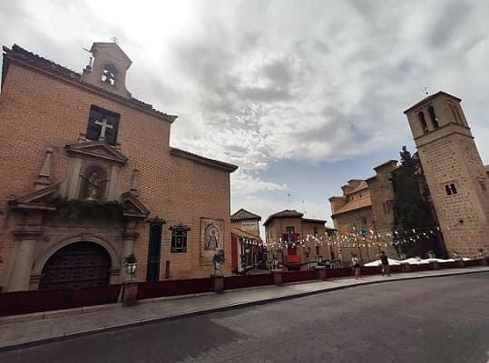
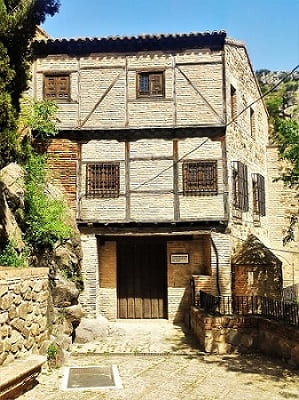
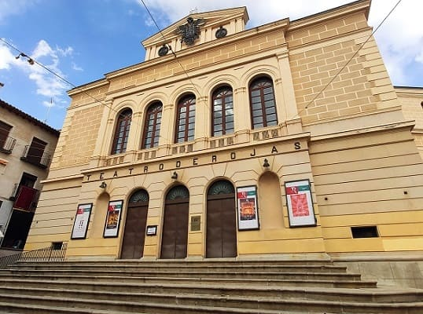
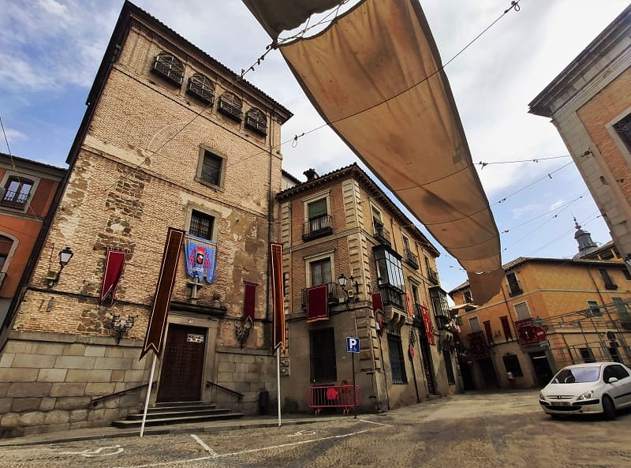
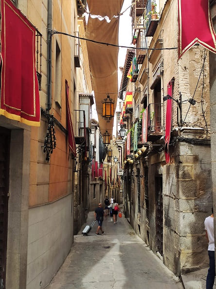

© 2016 - All Rights Reserved - Designed by Sergio López Martínez
![[Valid RSS]](https://www.onepointsync.com/wp-content/uploads/2016/08/valid-rss-rogers.png "Validate my RSS feed")